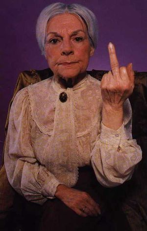

Villanueva de Algaidas
 De: La Frikipedia, la enciclopedia extremadamente seria.
De: La Frikipedia, la enciclopedia extremadamente seria.
Villanueva de Algaidas es una ciudad situada a algunos kilómetros de Málaga, esta última también conocida como "Boqueron Town". Este pequeño pueblo se encuentra entre la Gran Metrópolis "Atalaya" y la "EAYDTDA" (Estacion Aeronautica Y De Trenes De Archidona".
Su poblacion es de aproximadamente 4.503 habitantes, de los cuales 3500 son canis; 500 pijos ; 500 viejos y 3 personas normales (jebis, rockeros...).
Comercio
Principalmente se basa en en la venta de droga de los canis en el instituto, que no es poca, se mueve al dia 5000 €. Otra fuente importante de riqueza es la venta de motos, principalmente la compran los pokeros. Estos la "tunean" para que el sonido moleste mas. Con esto su nivel de hombria subira +10, pero bajará su inteligencia (si, si, mas todavia) a -15, y para recuperarla tendran que ir al instituto y dar 2 vueltas al campo y entonces aparecera bisigno y lo tendras que vencer, si lo haces, recibiras la espada de Halgor, y finalmente iras a la cueva del Mago Anly que te devolvera tus puntos de PP perdidos, siempre y cuando le des un cigarrito.
Lugares de ocio
Podrían estar en esta sección la Platinum y Periana´s House, pero mejor nos centremos en los sitios de mas concentracion del colectivo retrasado y por excelencia del pueblo llamado cani. Los Bancos del parque. Desde las 9 A.M hasta las 11:59 P.M ocupan estos asientos siempre con el reggeton o flamenco de fondo, los cigarros encendidos e insultando a cualquiera que tenga la menor pinta de persona normal (jebi, emo, rockero...) Sus insultos mas comunes son:
- Ilooooooooo! mira el jebiii ese, aonde vass tuuuu capuyoooooo, mecagooonnn too.
- Tiooooooooooooo, pelateeeeeeeeee. Vaya pelanbrerasss!!
- Vamos con la guitarra el melenuo eseeee!! pirate de mi territoriooooooo.
- Emooooooooooooooooooooooooooooooooooo! (risas subnormales mientras lo dicen; esto significa que sus PP´S de ataque subieron +2)
Clases Sociales
 Ejemplo de viejuna a la que nunca deberás mirar directamente
- Viejunos: Ocupan uno de los mayores grupos sociales de Algaidas. Siempre se le encontraran en las puertas de las casas de algún muerto, velatorio, plaza de los patos, entrada del pueblo... Este colectivo muestra una natural simpatía hacia los pijos debido a sus ropas "formales" y caras de "buenos". Y desencanto hacia canis (normal) ,jebis, emos, hombre con pelos largos, vestimenta oscura... estos últimos causan gran pánico entre los viejunos.
- Pijos: Fácil de reconocer por sus "elegantes" ropajes propios de un noble del siglo XVII,
Uno de los multitudinarios carteles PRO-PIJO
- Canis: Su definicion y comportamiento en hábitat natural esta explicado arriba, a si que haremos un breve resumen sobre estos seres; error de la naturaleza al intentar clonar a un gitano, falete, un raper y vehículos principales son las motos, sus favoritas, las que hagan mas ruido y finalmente su hábitat son los parques, discoteca y afueras del instituto (dentro no, vaya a ser que por casualidad parezcan alumnos, o peor, aprendan a sumar)
- Jebis y punkis: Este pequeño colectivo representan a los guerreros de la buena música que nadan en un mar de flamenco, reggaeton, canis y porqueria (esto ultimo engloba al flamenco, reggeton y canis). Son nomadas por lo que no tienen una zona fija, se mueven de un lado para otro siempre mostrando al mundo lo que es la musica y tarareando letras pegadizas). Modos de diversión; ir a pubs, reirse del asco de vida que llevan los canis, hacer el tonto (esto nunca viene mal) y platinum, porque aunque el genero de musica que suena allí no es el idoneo, siempre está bien echar un baile del compás para desconectar, finalmente aunque son el grupo social con menos componentes resulta que gracias a una estadistica de la "Universidad Agrotenica y Tecnologica Internacional de Adipaland" se ha descubierto que engloban al grupo emprendedor y estudiantil del pueblo.
Turismo
Que no te deje engañar el pequeño tamaño y aspecto aburrido de nuestra querida villa. En verdad, es un pueblo en el que cada rincón es un mundo por explorar (Ej: si visitas las esquinas del parque, encontraras infinidades de jeringuillas, podras jugar a adivinar que enfermedad transmite cada una, ¡¡¡divertidísimo!!!).
También podras dar una vuelta por nuestras calles (consejo: llevar un arma, recuerda que nuestro querido pueblo es un hervidero cani)
Y finalmente en Verano pasate por nuestra feria, no importa que solo venga el grillo y el Tío Vivo, porque habrá botellones hasta debajo de las piedras.¡¡Compruébalo!!.
Consejos
Para terminar es importante que sepais unos pasos que debeis cumplir antes de visitarnos:
- Traer un disco de Haze, uno de los ídolos Cani. Cuando uno de ellos te ataquen lanzalo lejos, no dudarán en correr hacia él.
- En defecto de no tener un disco de Haze (comprensible), siempre llevar un céntimo. La mecánica es la misma que en el paso anterior. Tiralo y se lanzaran a por él. Se han dado casos de la muerte de canis en la lucha por un solo céntimo.
- Aunque te sea difícil, imposible... lleva una gorra, te ayudará a pasar desapercibido entre la muchedumbre pokera. Evitarás insultos de índole subnormal.
- En una situación de peligro ante la amenaza de un cani, intenta por todos los medios quitarle la gorra de su cabeza. Viejos pergaminos encontrados en la cañada después de que fuese quemada por Piro, muestran los hechos de que al no tener su gorra se convierten en arena, desapareciendo y llevados por el viento.
- Nunca mires a un viejuno de la plaza de los patos directamente a los ojos. Cuenta la leyenda que te convertiras en piedra.
Esto es lo básico que debes saber antes de adentrarte en Algaidas City. Te esperamos.
Autor(es):
- Frikiman
- ArreKarallo
- Veni Vidi Vici
- Julius
- Generibot
Frikipedia 2005-2016, Licencia
GFDL 1.2 - Extraído por FrikiLeaks